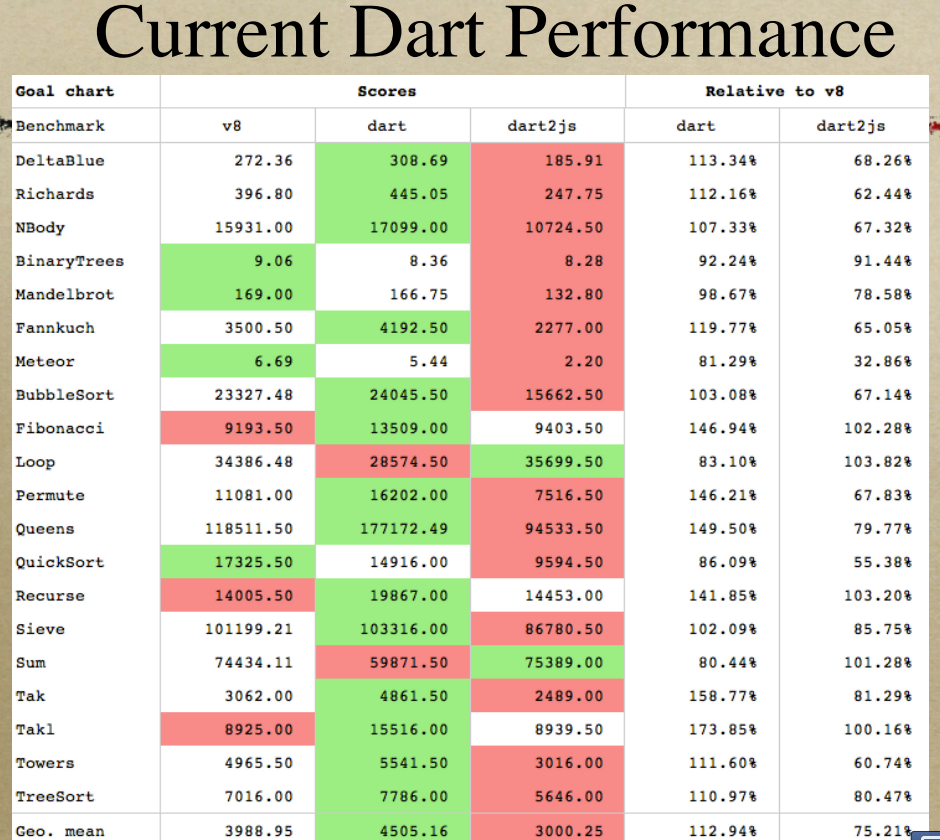

Dart VM Advent Calendar 2012 12/01¶
これが最新のVMだ！
断じてV8からjavascript向け最適化を取り除いたVMではない。
Dart VMの魅力¶
Dart VMの最大の魅力は、速さへのこだわりです。
既にV8より10倍高速に起動し、将来的には2倍高速に動作するのを目指しているようです。
ここ十年のVMとJITコンパイラ系の技術の進化は素晴らしくて、 JavaScriptにどのくらい性能向上できる余地が残っているのか、 何がボトルネックなのかが見えているのだと思います。
そして、その壁をECMAScriptの仕様改善により進化させていくことも可能だと思います。
私には、さらなる性能向上を目指したVMのDesignと、 性能向上を優先した上で柔軟な言語仕様を提供しようとしている Dart VMとDartが非常に魅力的に映ります。
Dart VMの性能¶
いくつかV8より高速に動作するベンチマークもぼちぼち出てきたようです。
score表示であり、緑色が優れています。
DeltaBlueやRichardsは、octane-benchmarkにも含まれているもので、 以下のdart benchmark harnessから試すことができます。
https://github.com/dart-lang/benchmark_harness
Dart VMは、上記にあげたいくつかのベンチマークで、V8よりも高速に動作するようです。
とはいえ、上記にあげた大部分はマクロベンチマークで、部分的な比較でしかないよう思います。
中規模のベンチマークであるoctaneに関しても、上記にあげた2つ以外は、V8のほうが速いと予想します。
現在のV8とDart VMを比較すると、文字列や乱数を使用するベンチマークは、V8のほうが高速なはずです。
Dart VMが高速に動作するケースは、Array(主にscalarlist)を使用するものや、 premitive型に落ちやすい要素が多いベンチマークなのかな？と思っています。
VMの匠¶
VMの匠、Lars Bak氏 26年ってすごいと思います。
氏と、最先端のVMチームの経験に学ばせていただこうかなと。。
この資料が詳しいです。
http://www.dartlang.org/slides/2012/09/strangeloop/pushing-the-limits-of-web-browsers-lars-bak.pdf
Dartの言語仕様¶
dartの言語仕様をsmalltalkと比較した紹介資料です。 これがわかりやすい。
http://www.dartlang.org/slides/2012/03/smalltalk-industry-conference/DARTtalk-20120319.pdf
気になるところは、
- not support eval.
性能を優先した妥協点なのだと思います。
- Classes is not first class objects.
関数はfirst class objectです。
そのため、isolateのmessage passingも関数単位で記述します。
Classesをmessage passingできたら便利かもなーと、 isolateを書いていて思うことはありますね。
- mirror based reflection. Fields can’t be added dynamically.
動的に追加できたらjavascript似たりよったりで同じ問題が起こるように思います。
性能を優先した妥協点なのだと思います。
個人的には、 List内包表記、pattern matching、eval、yield、型推論のような機能が欲しいですよね。。
大体はdartが発表された2011/11にdart discussionに突撃して、 そんな機能はないよ -> dart言語設計センスない、、 と言われるところにつながっているのかも。